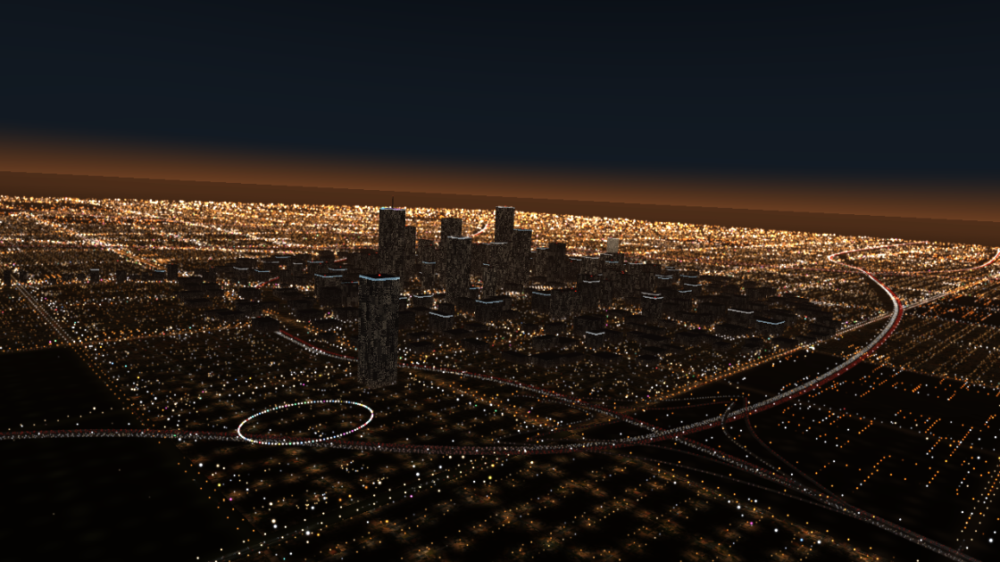
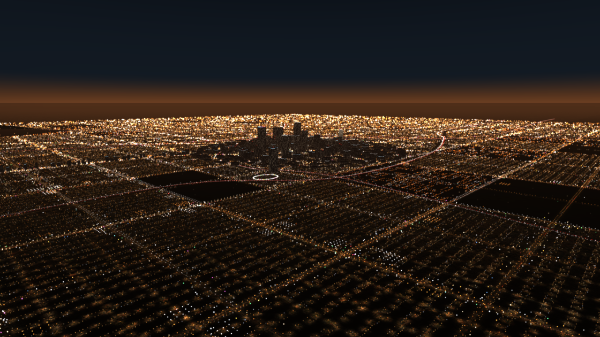
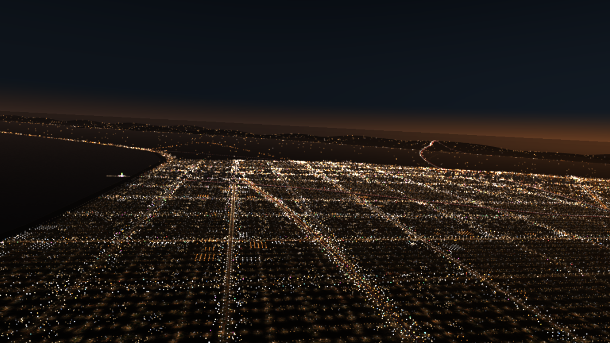
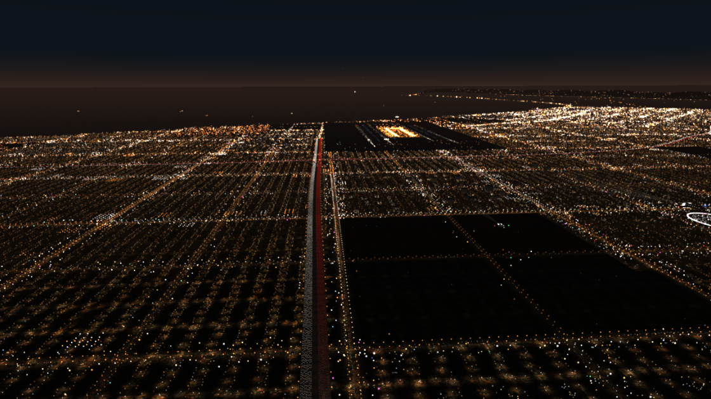

A browser WebGL / three.js flight over Los Angeles at night, MIDI-enabled (in the style of CT30 Highways). A helicopter at 3,000 ft flies west along the 105 toward LAX over dark suburbs lit by their street lights; turn (slowly, banking) toward downtown's towers and freeways, Hollywood, Wilshire, Sunset or Santa Monica; the hills on the horizon carry their sparse lights.

 |
 |
 |
Open index.html in Chrome or Edge (everything is local, three.js included). Press ? for the keys; A / C / K / Y turn toward LAX / downtown / Santa
Monica / Hollywood, G back to the 105, D hides the buttons. Knobs 1–8 on an X-TOUCH MINI set the speeds of the 8 westbound lanes. R records an MP4 with sound.
CT58.A6.LANight.md is the full context. Screenshots are taken from the running page (headless Chromium).